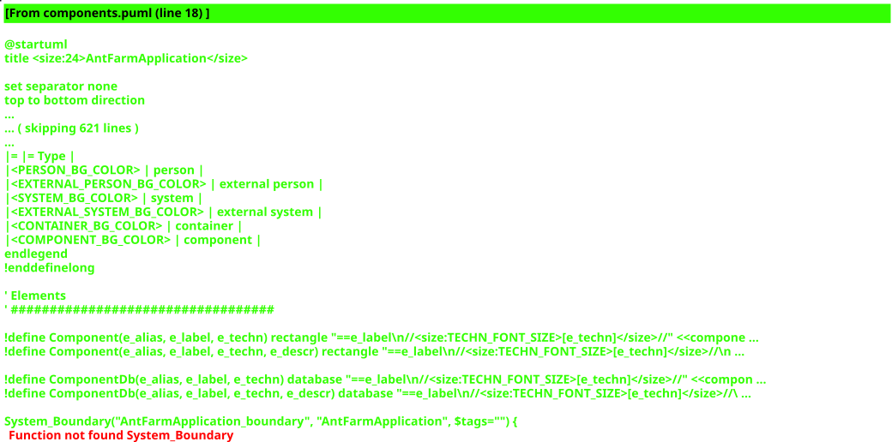

System context → C4 mapping
This single Spring Boot application is the System (Ant Farm).
Its one runnable process is the Container (the Boot fat jar +
PostgreSQL). The C4 components are the six bounded contexts,
implemented as Spring Modulith application modules — the
diagrams below are component diagrams of those modules and their
dependencies, as generated by
org.springframework.modulith.docs.Documenter.
Text versions: all-docs.adoc · per module: ants | colony | food | predators | simulation | world
Module overview
All six modules, their Spring beans and the dependencies between them
(arrows honour the declared allowedDependencies).

PlantUML source (components.puml)
(source not loaded)
Per-module component diagrams
Each bounded context as a C4 component with its public API beans and its relationships to the other contexts.